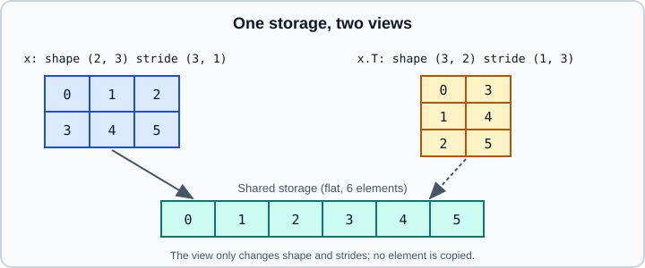

Indexing, Views & Broadcasting
|
This content was generated with the assistance of AI and should be verified against the official documentation before being relied on in production. |
Most shape-related bugs in PyTorch come from three things: confusing a view with a copy, forgetting that a view can be non-contiguous, and broadcasting two tensors into a shape nobody intended. This page explains indexing, which operations return views, view versus reshape, the broadcasting rules and the memory format for images. It targets Python 3.13 and PyTorch 2.15. Examples were run on Python 3.13 with PyTorch 2.15 (CPU) on 2026-10-31. Tensor basics are on Tensors; the NumPy counterparts are basic indexing, advanced indexing, copies and views and broadcasting.
Indexing
Indexing follows NumPy. Basic indexing (integers, slices, None, ...) returns a view. Advanced indexing (integer or boolean tensors and lists) returns a copy. Assignment through either form modifies the original in place.
import torch
x = torch.arange(24).reshape(2, 3, 4)
x[0] # first matrix, shape (3, 4) -- view
x[:, 1] # shape (2, 4) -- view
x[..., -1] # last element along the last dim, shape (2, 3)
x[:, ::2, 1:3] # strided slices -- view
x[:, None, :, :] # insert a size-1 dim, shape (2, 1, 3, 4)
idx = torch.tensor([0, 2])
x[:, idx] # advanced indexing, shape (2, 2, 4) -- copy
mask = x > 10
x[mask] # 1-D tensor of selected values -- copy
x[mask] = 0 # assignment writes through the mask
x[0, 1] = torch.tensor([9, 9, 9, 9])
# explicit gather/scatter helpers
v = torch.tensor([[10, 20, 30], [40, 50, 60]])
torch.gather(v, 1, torch.tensor([[2, 0], [1, 1]])) # tensor([[30, 10], [50, 50]])
torch.where(v > 25, v, torch.zeros_like(v))
v.index_select(0, torch.tensor([1]))Source: https://docs.pytorch.org/docs/stable/tensor_view.html and https://docs.pytorch.org/tutorials/beginner/basics/tensorqs_tutorial.html
Notes:
-
Negative step slices such as
x[::-1]are not supported; usetorch.flip(x, dims=[0]), which copies. -
Index tensors must be
int64(orboolfor masks). Out-of-range indices raiseIndexErroron the CPU and a device-side assert on CUDA. -
x[mask]allocates a data-dependent shape. That forces a host synchronization on GPUs and is a graph-break source undertorch.compile(see Graph Breaks, Recompilation and Dynamic Shapes). -
index_add_,scatter_add_andindex_put_(accumulate=True)are the safe ways to write repeated indices; plainx[idx] += 1with duplicates inidxincrements each position only once.
Views
A view is a tensor that shares the storage of another and differs only in shape, stride and offset. Changing data through one is visible in the other. The official list of operations that return views includes basic indexing and slicing, view, view_as, transpose, t, T, mT, permute, movedim, swapaxes, squeeze, unsqueeze, unflatten, unfold, expand, expand_as, narrow, select, diagonal, detach, as_strided, real, imag, view_as_real, unbind, split, chunk, tensor_split, hsplit and vsplit.

base = torch.tensor([[0, 1], [2, 3]])
t = base.transpose(0, 1)
print(base.is_contiguous(), t.is_contiguous()) # True False
print(base.stride(), t.stride()) # (2, 1) (1, 2)
print(base.untyped_storage().data_ptr() == t.untyped_storage().data_ptr()) # True
t[0, 1] = 99
print(base) # base[1, 0] is now 99Because a view keeps the original alive and writes through, in-place edits of a view change the base. They can also interact with autograd, which tracks views and rewrites history when a view is modified in place.
view, reshape and contiguous
Tensor.view(*shape) never copies and requires the requested shape to be compatible with the existing strides; otherwise it raises a RuntimeError. reshape (and flatten) returns a view when it can and a copy when it must, and the documentation says code should not depend on which one it gets. contiguous() returns the same tensor if it is already contiguous and a copy otherwise.
x = torch.arange(6).reshape(2, 3)
xt = x.t() # shape (3, 2), non-contiguous
try:
xt.view(6) # incompatible with the strides
except RuntimeError as err:
print("view failed:", str(err)[:60])
flat = xt.reshape(6) # works: makes a copy here
flat2 = xt.contiguous().view(6) # explicit equivalent
print(torch.equal(flat, flat2)) # True
y = x.view(3, 2) # fine: same strides compatible
y2 = x.view(-1, 3) # -1 infers one dimensionRule of thumb: use view when you want an error if a copy would be needed, and reshape otherwise. Use flatten(start_dim=1) to flatten all but the batch dimension, and unflatten to reverse it. Many fused kernels need contiguous input, so a long chain of transpose and permute followed by an operation that calls contiguous() internally can hide an expensive copy.
Broadcasting
Two tensors are broadcastable when, comparing shapes from the trailing dimension backwards, each pair of sizes is equal, one of them is 1, or one is missing. The result shape prepends 1s to the shorter shape and takes the larger size in each position. Broadcasting expands tensors virtually; no data is copied.
a = torch.ones(5, 3, 4, 1)
b = torch.ones(3, 1, 1)
print((a + b).shape) # torch.Size([5, 3, 4, 1])
c = torch.ones(5, 1, 4, 1)
print((c + b).shape) # torch.Size([5, 3, 4, 1])
try:
torch.ones(5, 2, 4, 1) + b # 2 vs 3 in the third trailing dim
except RuntimeError as err:
print("not broadcastable")
# in-place operations cannot change the target's shape
x = torch.ones(5, 3, 4, 1)
x.add_(b) # works: result has x's shape
try:
torch.ones(1, 3, 1).add_(torch.ones(3, 1, 7))
except RuntimeError:
print("in-place broadcast would change the shape")
# the classic accident
col = torch.ones(4, 1)
vec = torch.randn(4)
print((col + vec).shape) # torch.Size([4, 4]), not [4, 1]The last case is the most common bug: a column of shape (N, 1) combined with a vector of shape (N,) broadcasts to (N, N). This happens with losses (pred of shape (N, 1) and target of shape (N,)) and silently gives the wrong value. Make shapes explicit with unsqueeze or reshape. Old PyTorch versions treated some shape mismatches with equal element counts as 1-D operations; that behaviour is deprecated and warns, and the toggle torch.utils.backcompat.broadcast_warning.enabled = True helps find affected code written for old releases.
expand and expand_as perform the same virtual replication explicitly; the expanded dimension gets stride 0, so writing into an expanded tensor is an error-prone operation. Use repeat when you need real copies and torch.broadcast_tensors or torch.broadcast_shapes to inspect the result.
Memory format for images
Image batches have shape \((N, C, H, W)\) in NCHW order by default. torch.channels_last stores them as NHWC (stride of the channel dimension equal to 1) while the logical shape stays \((N, C, H, W)\). On recent GPUs and CPUs this layout can speed up convolutions, particularly with mixed precision.
x = torch.randn(8, 3, 224, 224)
y = x.contiguous(memory_format=torch.channels_last)
print(y.shape, y.stride()) # shape unchanged; strides (150528, 1, 672, 3)
print(y.is_contiguous(memory_format=torch.channels_last)) # True
model = torch.nn.Conv2d(3, 16, 3)
model = model.to(memory_format=torch.channels_last)
out = model(y)
print(out.is_contiguous(memory_format=torch.channels_last))Source: https://docs.pytorch.org/tutorials/intermediate/memory_format_tutorial.html and https://docs.pytorch.org/docs/stable/tensor_attributes.html
torch.preserve_format (the default for clone and elementwise ops) keeps the input strides when the tensor is dense and non-overlapping. Whether channels-last helps depends on the hardware and kernel; measure it (see Performance Tuning Guide). The convolution layers themselves are covered on Linear, Convolution and Pooling Layers.
Checklist
-
Need a copy? Use
clone(). Need to assume sharing? Use basic slicing,viewordetach. -
Getting a
viewerror aftertransposeorpermute? Callreshape, orcontiguous()first. -
Shapes
(N,)and(N, 1)mixed in arithmetic? Make the shape explicit. -
Boolean-mask indexing in a hot loop? Prefer
torch.wherewith fixed shapes.